Generalized Additive Models

Outline
- Smoothing
- GAMS and Basis Functions
- Evaluating your GAM
- GAMs, Space, Time
A Wiggly Problem: Temperature and Oxygen in Seawater Vertical Profiles
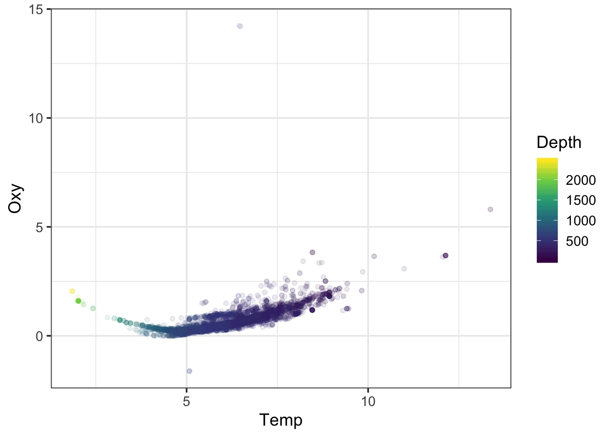
A Linear Fit
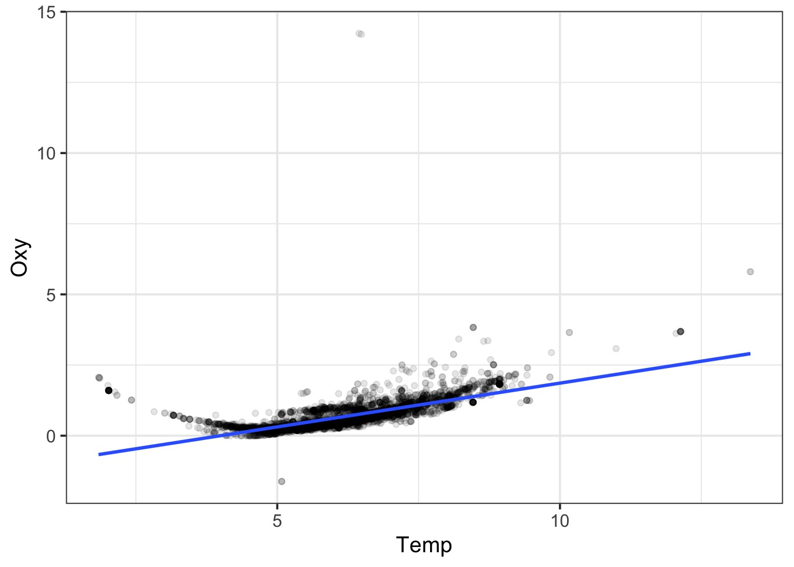
Bad Diagnostics!
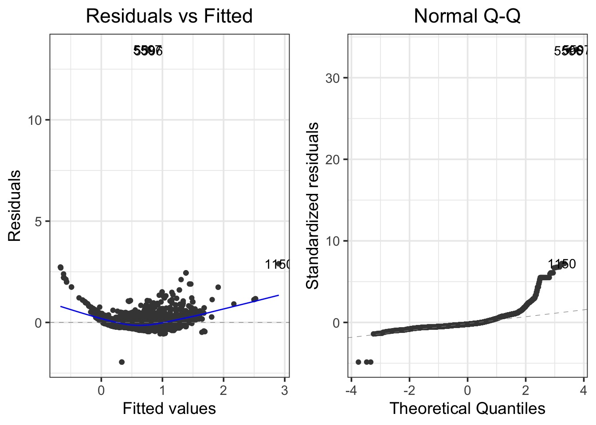
What about a Polynomial?
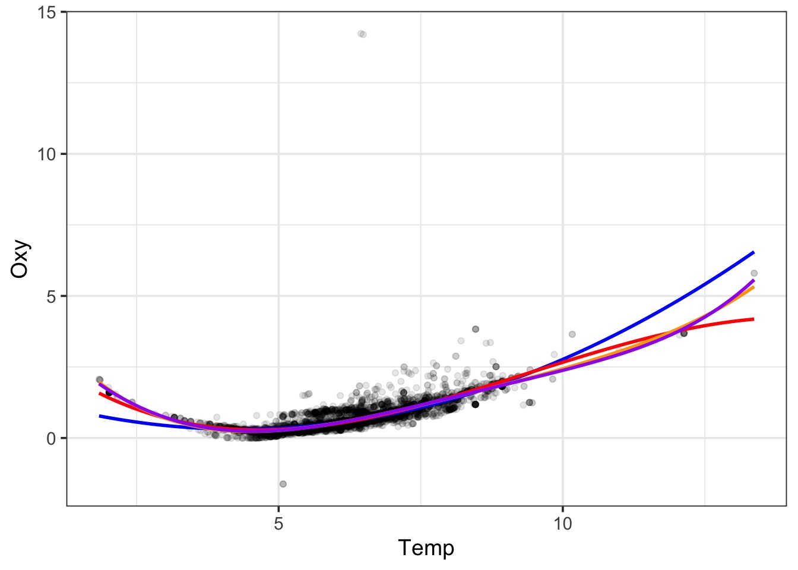
Bad Diagnostics, even at the 5th order!
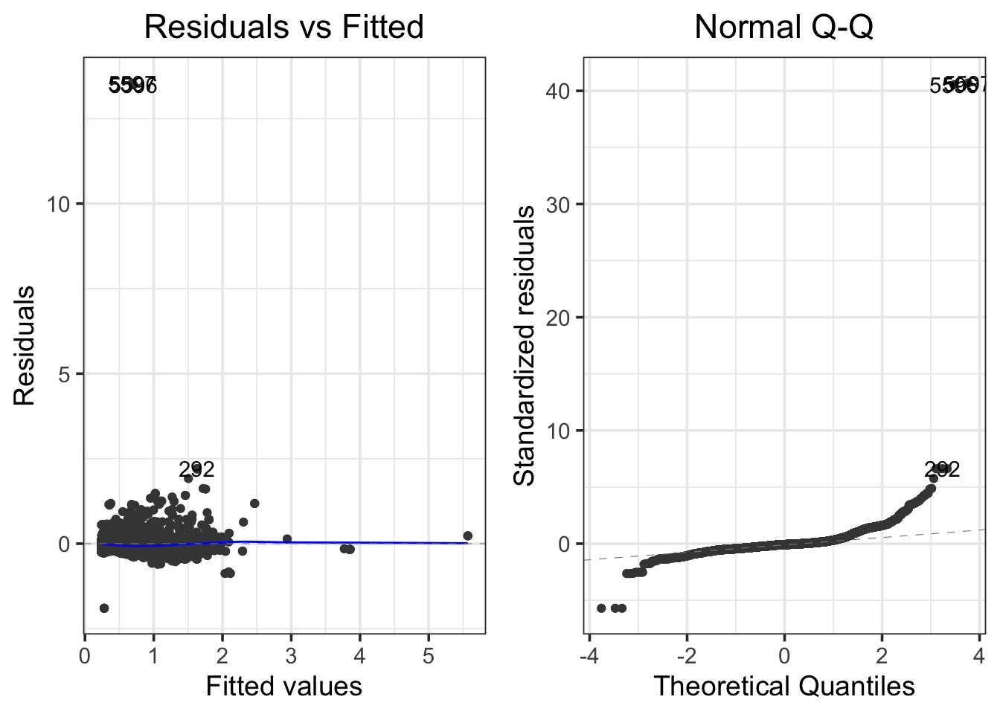
LOESS
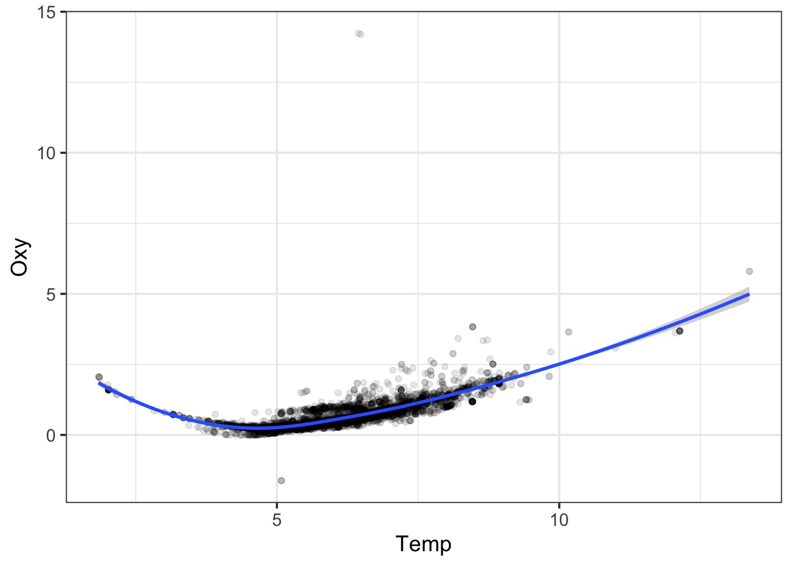
LOESS Takes Chunks
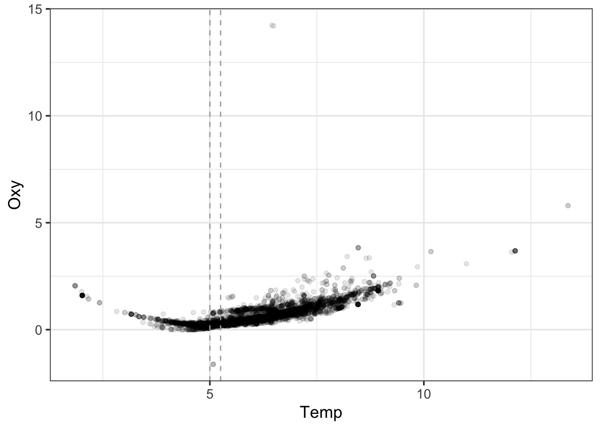
LOESS Takes Chunks
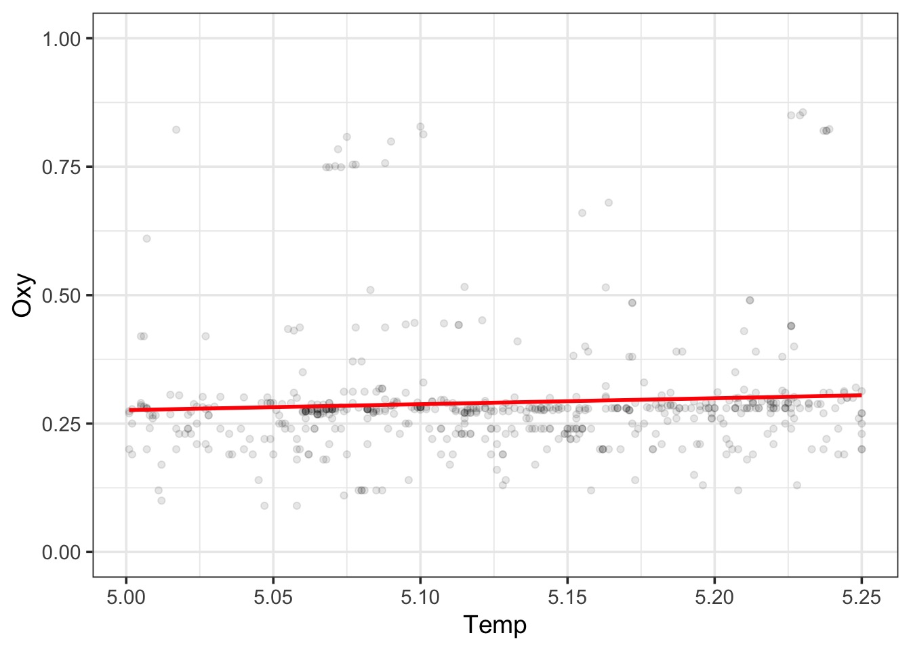
LOESS Takes Chunks
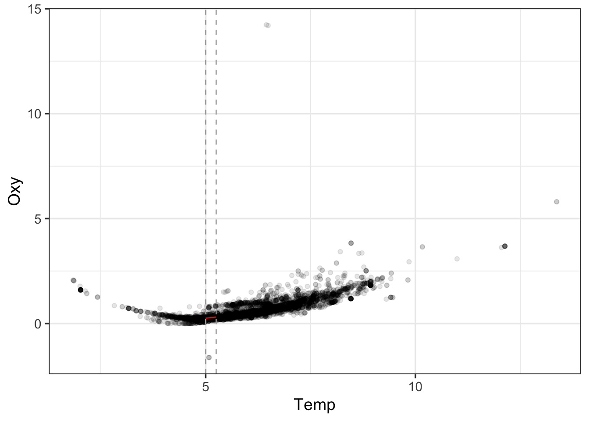
LOESS Takes Chunks
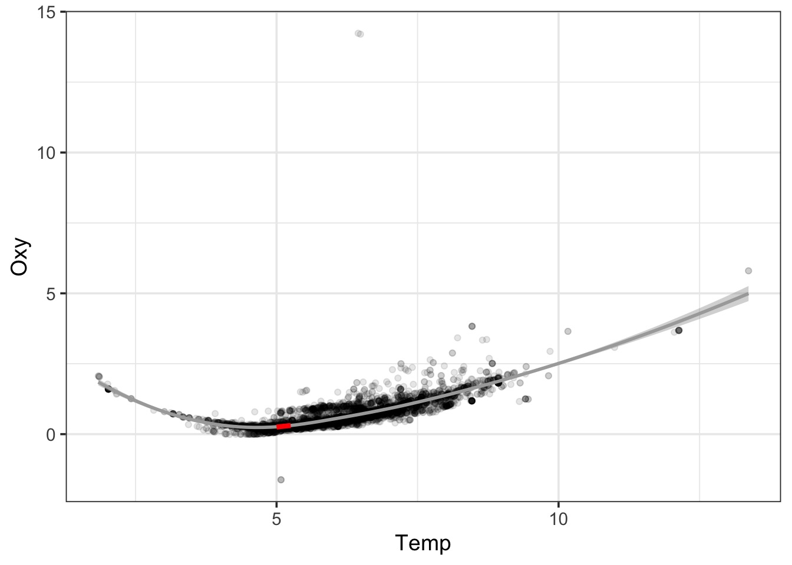
Smooth Splines Use Local Area Means

Problems with these techniques
- LM or GLM: We do not meet assumptions, and crazy residuals
- Polynomial: What polynomial to choose? Often misfit.
- LOESS: Not based on formula - purely phenomenological
- Splines: Just smoothed data. No real mechanism.
Outline
- Smoothing
- GAMS and Basis Functions
- Evaluating your GAM
- GAMs, Space, Time
The Central Idea Behind GAMs
- Standard Linear Model \[y\sim \mathcal{N}(\mu, \sigma^{2})\] \[\mu = b_{0}+b_{1}X_{1}\]
- Polynomial Regression \[y\sim \mathcal{N}(\mu, \sigma^{2})\] \[\mu = b_{0}+b_{1}X_{1}+b_{2}X^2\]
- GLM formulation \[y\sim \mathcal{N}(\mu, \sigma^{2})\] \[g(\mu) = b_{0}+b_{1}X_{1}+b_{2}X\]
- GAM formulation \[y\sim \mathcal{N}(\mu, \sigma^{2})\] \[g(\mu) = f(X)\]
The GAM Formulation in More Detail
\[y\sim \mathcal{N}(\mu, \sigma^{2})\]
\[g(\mu) = f(X)\]
\[ f(X) = \sum_{j=1}^{d}\gamma_jB_j(x)\]
The Cental Idea Behind GAMs

Basis Functions: You’ve seen them before
\[f(X) = \sum_{j=1}^{d}\gamma_jB_j(x)\]
Linear Regression as a Basis Function:
\[d = 1\]
\[B_j(x) = x\]
So…. \[f(x) = \gamma_j x\]
Basis Functions: You’ve seen them before
\[f(X) = \sum_{j=1}^{d}\gamma_jB_j(x)\]
Polynomial Regression as a Basis Function:
\[f(x) = \gamma_0 + \gamma_1\cdot x^1 \ldots +\gamma_d\cdot x^d\]
Basis Functions in GAMs
- You can think of every \(B_j(x)\) as a transformation of x
- In GAMs, we base j off of K knots
- A knot is a place where we split our data into pieces
- We optimize knot choice, but let’s just split evenly for a demo
- We optimize knot choice, but let’s just split evenly for a demo
- For each segment of the data, we fit a seprate function, then add them together
Consider our data
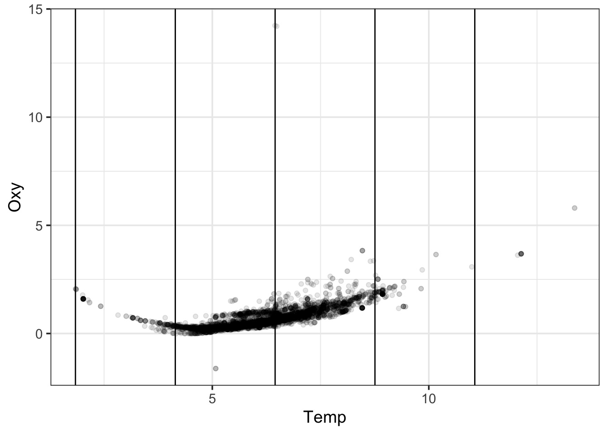
Consider our data
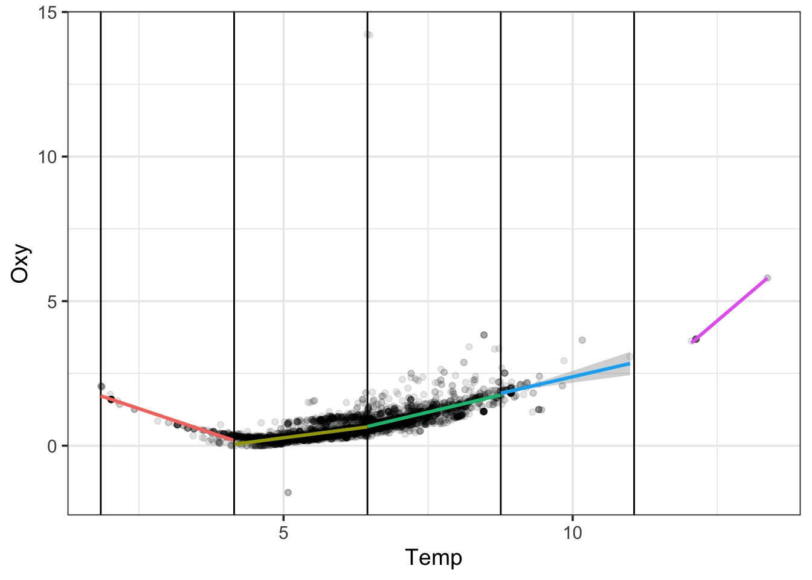
A Square Fit
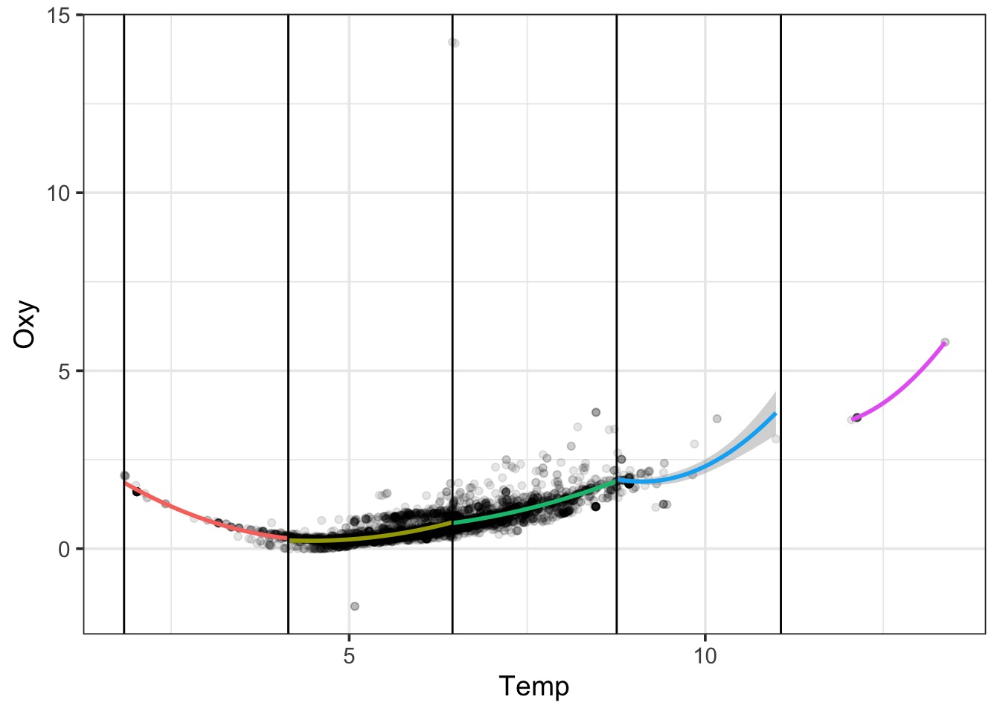
A Cubic GAM
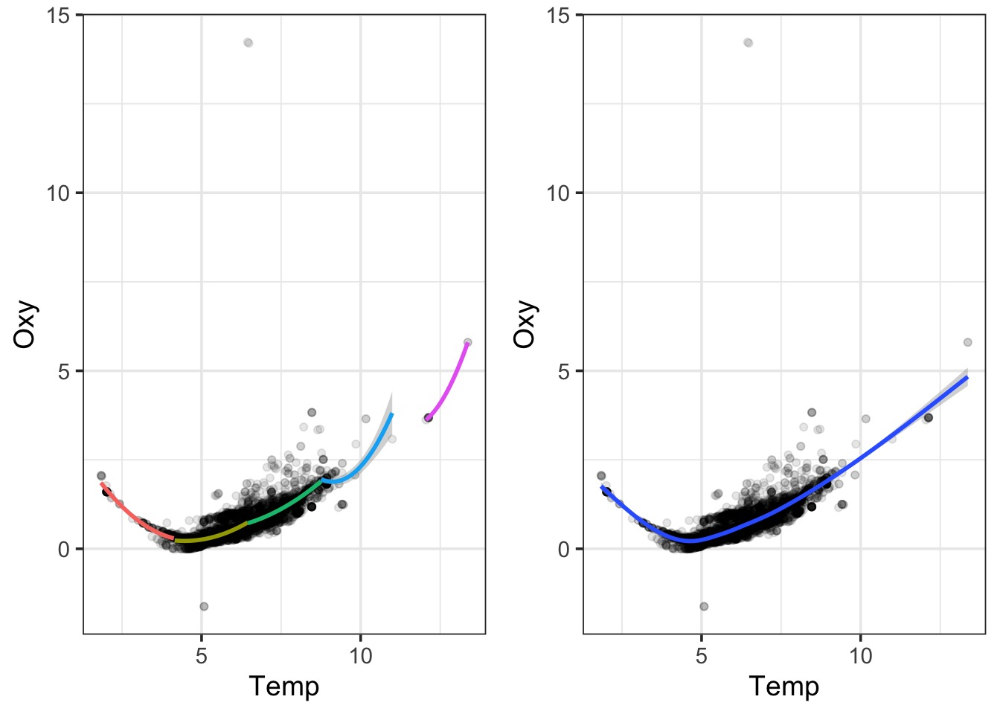
How do we fit
- Use penalized likelihood
\[l_p(\beta)= l(\beta) - \color{darkred}{\mathcal{penalty}}\]
- Penality adjust for ‘wiggliness’
\[l_p(\beta)= l(\beta) - \color{#b2001d}{\lambda B'SB}\]
- S is a penalty matrix, and \(\lambda\)
- \(\lambda\) = 2 by default, but play with it!
Fitting As a Gam
Many Different Kind of Basis Functions
- Thin Plate Regression Splines
bs = "tp"
- Default
- Analgous to looking at bending within each region of basis
- Cubic Regression
bs = "cr"
- Raises (x-k) to up to the 3rd power
## Many Different Kind of Basis Functions
- Random Effects
bs = "re"
- P-Splines
bs = "ps"
- Penalized B-spline
- Flexible bands passing through several points
Interaction Effect Basis Functions via Tensor Products
bs = "ts"- One set of penalties per marginal basis
- One set of penalties per marginal basis
bs = "ti"- Excludes main effects
- Excludes main effects
bs = "t2"- One penalty set per term
GAMs and Causal Inference
- We are fitting something to a mean structure, not error
- More direct control of partial correlations
- BUT - estimating many terms for the basis
- So, more akin to mixed models
- Causal implications less clear than fixed effects
Outline
- Smoothing
- GAMS and Basis Functions
- Evaluating your GAM
- GAMs, Space, Time
Evaluating Assumptions
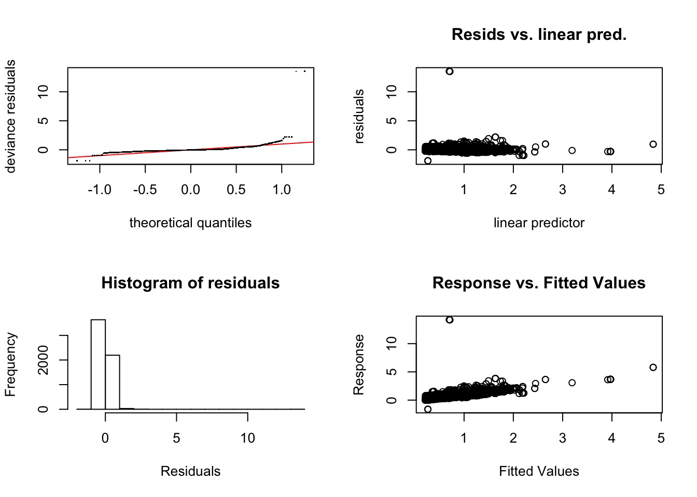
Evaluating Assumptions
>gam.check(fit, k.rep=1000)
Method: GCV Optimizer: magic
Smoothing parameter selection converged after 4 iterations.
The RMS GCV score gradient at convergence was 2.959763e-07 .
The Hessian was positive definite.
Model rank = 10 / 10
Basis dimension (k) checking results. Low p-value (k-index<1) may
indicate that k is too low, especially if edf is close to k'.
k' edf k-index p-value
s(Temp) 9.00 6.89 0.93 0.001 ***
---
Signif. codes: 0 ‘***’ 0.001 ‘**’ 0.01 ‘*’ 0.05 ‘.’ 0.1 ‘ ’ 1Model Evaluation
Effective DF = DF adjusted for penalty
Family: gaussian
Link function: identity
Formula:
Oxy ~ s(Temp, bs = "cr")
Approximate significance of smooth terms:
edf Ref.df F p-value
s(Temp) 6.888 7.726 1233 <2e-16Assessing Fit
Family: gaussian
Link function: identity
Formula:
Oxy ~ s(Temp, bs = "cr")
Parametric coefficients:
Estimate Std. Error t value Pr(>|t|)
(Intercept) 0.646192 0.004348 148.6 <2e-16 ***
---
Signif. codes: 0 '***' 0.001 '**' 0.01 '*' 0.05 '.' 0.1 ' ' 1
Approximate significance of smooth terms:
edf Ref.df F p-value
s(Temp) 6.888 7.726 1233 <2e-16 ***
---
Signif. codes: 0 '***' 0.001 '**' 0.01 '*' 0.05 '.' 0.1 ' ' 1
R-sq.(adj) = 0.619 Deviance explained = 62%
GCV = 0.11108 Scale est. = 0.11093 n = 5868Visualizing
Visualizing
Peeking Inside the Black Box
# A tibble: 5,868 x 10
`(Intercept)` `s(Temp).1` `s(Temp).2` `s(Temp).3` `s(Temp).4`
<dbl> <dbl> <dbl> <dbl> <dbl>
1 1 -0.0196 -0.0116 -0.0122 -0.0349
2 1 -0.0196 -0.0116 -0.0122 -0.0349
3 1 -0.165 0.0358 0.847 -0.217
4 1 -0.178 -0.0933 -0.155 -0.148
5 1 -0.130 -0.0651 -0.127 -0.0579
6 1 -0.169 -0.0867 -0.154 -0.113
7 1 -0.169 -0.0871 -0.154 -0.115
8 1 -0.511 -0.264 -0.462 -0.361
9 1 -0.348 -0.181 -0.311 -0.263
10 1 -0.315 -0.164 -0.280 -0.242
# … with 5,858 more rows, and 5 more variables: `s(Temp).5` <dbl>,
# `s(Temp).6` <dbl>, `s(Temp).7` <dbl>, `s(Temp).8` <dbl>,
# `s(Temp).9` <dbl>Visualizing the Black Box
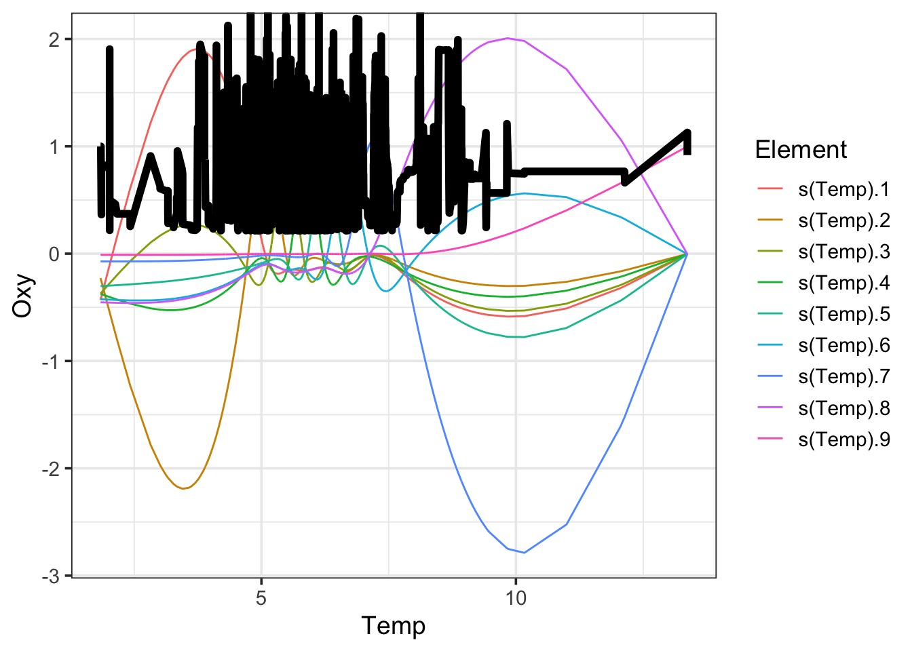
Outline
- Smoothing
- GAMS and Basis Functions
- Evaluating your GAM
- GAMs, Space, Time
Basis Functions for Space and Time
- Gaussian Process
bs = "gp"- Can choose the model with mod = 1:5
- An approximation, but close enough!
- For point processes, time series, etc.
- Models the mean
- Modeling error
- Can use corAR1 or anything
- Not causal
- Discrete places (e.g., polygons)
bs = 'mrf': Markov Random Field- Like SAR
Global Temperature Example
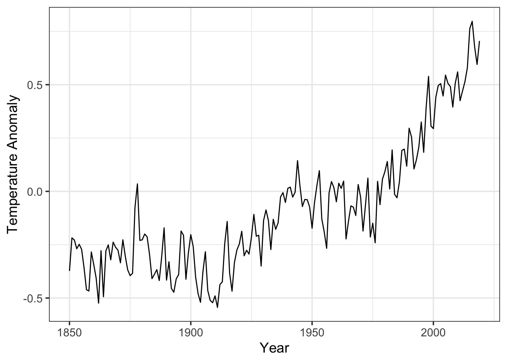
Any ACF from a Linear Fit?
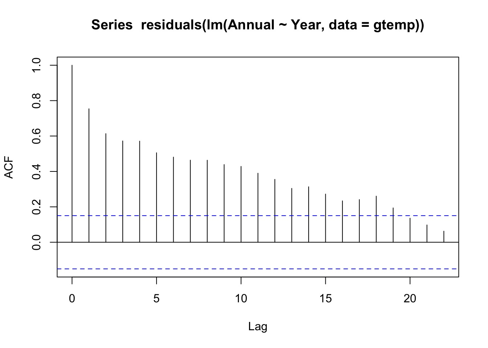
A GAM Timeseries Fit
Did it Blend?
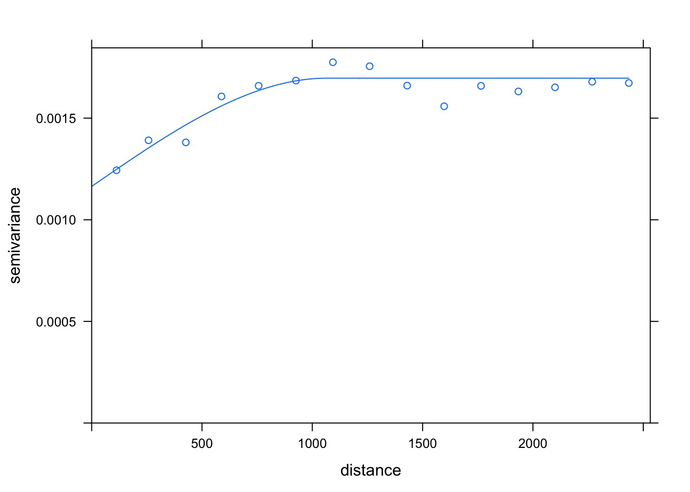
The Fit
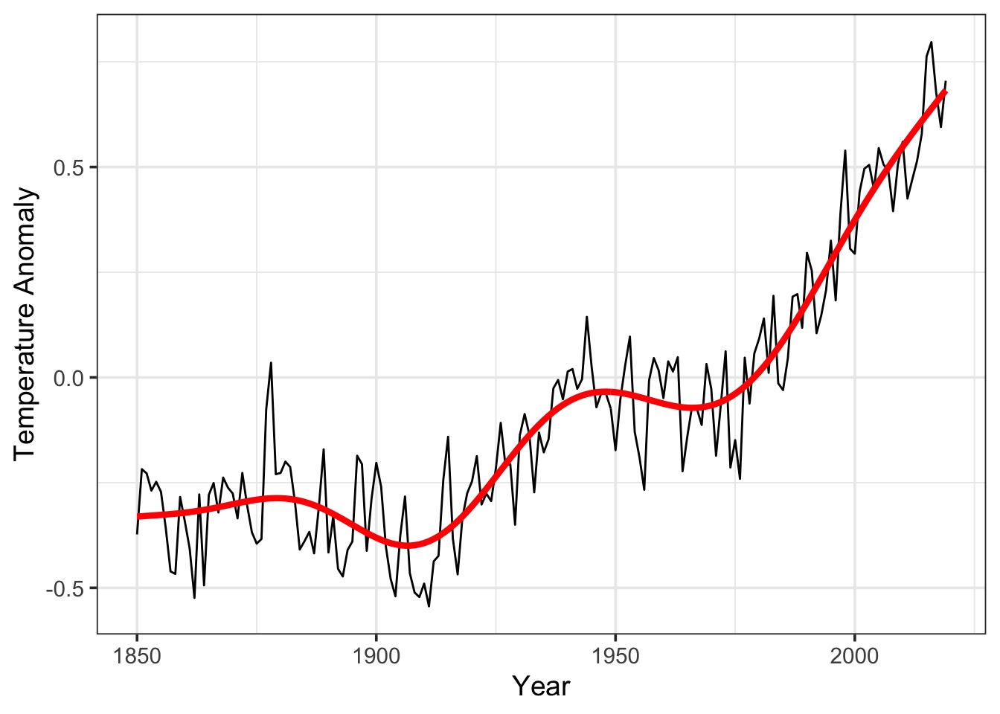